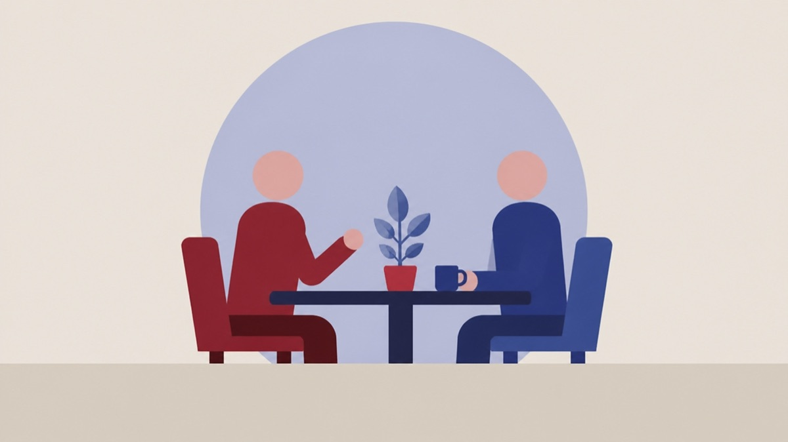

Besluttet 6. oktober, Socialudvalget, Kolding
Støtte til frivilligt socialt arbejde til foreninger med samarbejdsaftale 2027 (Servicelovens §18)

Kort fortalt
- Hvem
- Socialudvalget, Kolding Kommune
- Hvornår
- Tirsdag 6. oktober 2026
- Status
- Besluttet. Godkendt.Beslutningen er forkortet her. Læs hele beslutningen
Er noget forkert her? Skriv til os
Læs hele sagen Kommunens egen tekst
Sagsfremstilling
Kolding Kommune afsætter hvert år et beløb til støtte til frivilligt socialt arbejde (Servicelovens
Samlet er der i 2027 afsat 8.210.515 kr. til støtte til frivilligt socialt arbejde til fordeling. Beløbet
skal både dække tilskud til foreninger med samarbejdsaftale, foreninger uden
samarbejdsaftale, Frivilligugen og en udviklingspulje.
6 frivillige sociale foreninger med samarbejdsaftale har ansøgt om støtte i 2027.
Samlet har de 6 foreninger med samarbejdsaftaler søgt midler for 9.080.731 kr.
De 6 foreningers ansøgninger indstilles til at få støtte med i alt 7.437.015 kr.
Samarbejdsaftalerne vedlægges som bilag.
Kriterier for fordeling af støtte til frivilligt socialt arbejde vedhæftes som bilag.
Det tidligere Social- og Sundhedsudvalg besluttede på udvalgsmødet den 21. april 2021 at
afsætte 125.000 kr. til en udviklingspulje i 2022 samt at udviklingspuljen skal finansieres af den
støtte til frivilligt socialt arbejde (Servicelovens §18), der er afsat til foreninger med
samarbejdsaftaler.
Der indstilles til støtte til frivilligt socialt arbejde med 125.000 kr. til udviklingspuljen.
Formålet med udviklingspuljen er at fremme udvikling og nyskabende initiativer i den frivillige
sociale sektor i Kolding Kommune. Det sker ved at give lokale foreninger og ildsjæle mulighed
for at søge mindre beløb i løbet af året til at afprøve nye idéer og reagere på nye behov, der
kan opstå i løbet af året. Ansøgningsprocessen er ukompliceret og der gives hurtigt svar på,
om ansøgerne har fået pengene.
De nærmere kriterier for udviklingspuljen vedlægges som bilag.
Endelig er Frivilligugen indstillet som aktivitet til at få støtte med 157.545 kr.
Med Frivilligugen sættes fokus på frivillighed og fællesskaber i Kolding Kommune blandt andet
ved forskellige arrangementer, hvor borgerne inviteres ind i fællesskaber, og hvor de frivillige
sociale ildsjæle bliver fejret og hyldet. Det er en opgave som til og med 2023 har ligget hos
forvaltningen, men som nu ligger hos Frivilligcenter Frivillig Kolding.
Med udgangspunkt i drøftelserne på udvalgsmødet den 8. september 2026, har forvaltningen
udarbejdet et forslag til fordeling af støtte til frivilligt socialt arbejde.
Herunder ses ansøgerne og hvilke beløb, forvaltningen indstiller, at de skal modtage i 2027:
Ansøgere
Ansøgt 2026
Bevilliget
Ansøgt 2027
Indstillet
Ansøgere
Ansøgt 2026
Bevilliget
Ansøgt 2027
Indstillet
Café Paraplyen
Café Nærværket og
Familienetværket*
DRC Frivillig Kolding 471.000
Folkekøkkenet
Frivilligcenter
Frivillig Kolding
TUBA
I alt
*Der er i 2026 indgået en ny samarbejdsaftale med Café Nærværket og Familienetværket, som
tidligere har modtaget støtte i den del af støtte til frivilligt socialt arbejde, som går til foreninger
uden samarbejdsaftale. For 2026 fik Café Nærværket bevilliget 414.000 kr. og
Familienetværket fik bevilliget 134.000 kr. i alt 548.000 kr.
Der er udarbejdet et resumé af alle ansøgningerne. Dette er vedlagt som bilag. Alle seks
ansøgeres regnskab og budget vedlægges ligeledes som bilag.
Beslutning
Godkendt.
Benny Dall var inhabil og deltog ikke i sagens behandling.
Kilde: Kolding Kommune, Socialudvalget, referat fra mødet tirsdag 6. oktober 2026, punkt 1. Læs den originale sag hos kommunen.